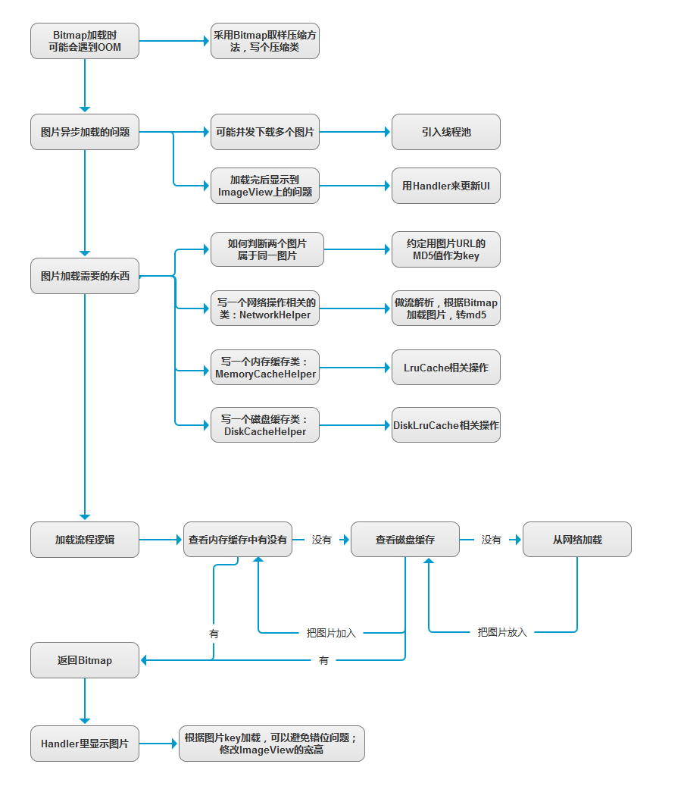
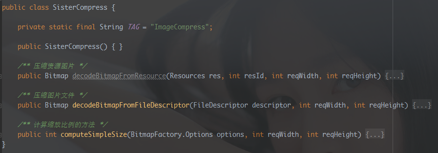
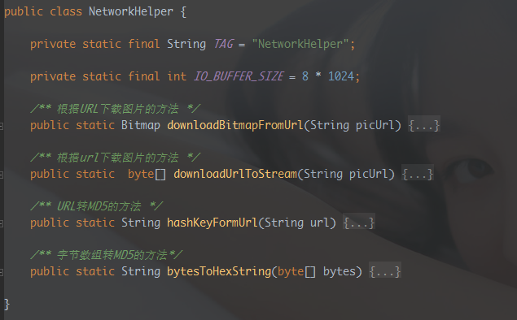
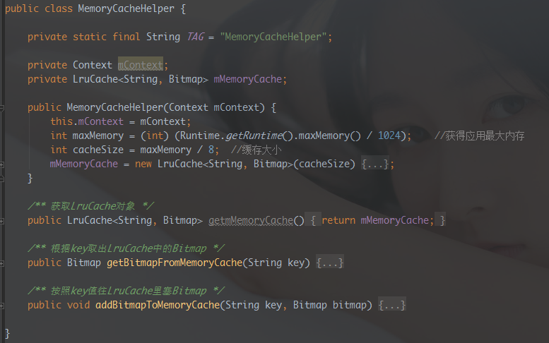
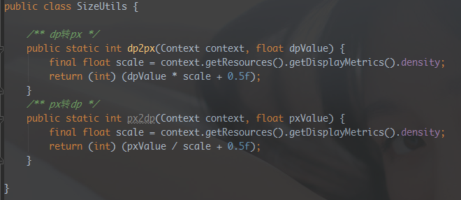
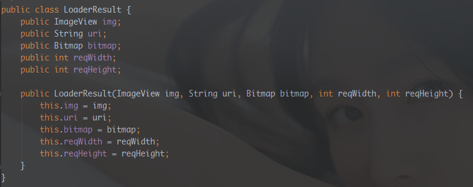
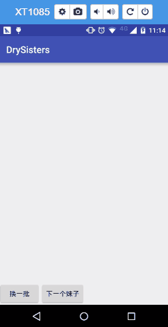
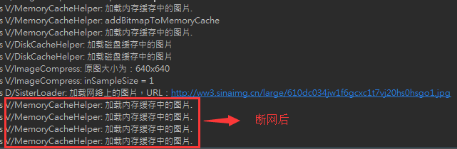

1. Un poco de cháchara
En la sección anterior, cambiamos la fuente de datos de las imágenes de chicas delocala analizarla interfaz proporcionada por GankDatos. En esta sección queremos optimizar esta clase de carga de imágenes, por ejemplo, añadiendo la posibilidad de mostrar imágenes locales. Además, está el tema de la caché: la carga de imágenes que usamos actualmente no tiene nada de caché; cada vez se hace la solicitud y se analiza el flujo de datos; incluso para la misma imagen hay que solicitarla una y otra vez, lo cual resulta bastante redundante. ¿Guardamos las imágenes en la memoria, o en el disco, y cuando accedamos a los mismos recursos de imagen los tomamos de ahí? Sí, parece que tiene bastante potencial. Entonces, en esta sección vamos a escribir un framework sencillo de carga de imágenes con caché. Bien, lo llamaremosSisterLoader¡...!
(PD: La razón por la que llevo mucho tiempo sin actualizar es que últimamente he estado mirando cosas relacionadas con descargas, y también corrigiendo errores. Al escribir la carga de imágenes me quedé atascado con algunos problemas y no pude sacar tiempo para resolverlos...)
2. Divulgación de conceptos básicos
Antes de empezar a escribir código, vamos a dejar claros algunos conceptos:
1) Caché
① Propósito de introducir la caché de imágenes：
Respuesta: Cargar imágenes desde la red consume tiempo, batería y datos móviles. Queremos poder almacenar algunas imágenes que ya se han cargado para poder reutilizarlas cuando se carguen de nuevo.
② ¿Qué es la caché de dos niveles?：
Respuesta: Si te explico la lógica que se sigue para mostrar una imagen, lo tendrás clarísimo:Necesitas mostrar una imagen ——> Buscar en memoria(si existe, mostrarla) —No existe—>Buscar en disco(si existe, mostrarla) —No existe—> Cargar desde la red(mostrarla) ——>Guardar una copia en memoria ——> Guardar una copia en disco
De lo anterior sabemos que hay dos tipos de caché:caché en memoriaycaché en disco(tarjeta SD / almacenamiento interno):
Caché en memoria: caché de primer nivel, se obtiene preferentemente de aquí. Los archivos de caché se almacenan endata/data/nombre_del_paquete/cacheEn este directorio. El método antiguo para escribir caché en memoria era usarun Map de objetos Bitmap con referencias débiles, y estuve revisando el código ancestral de la empresa de hace tres trabajos:
public class MemoryCache {
private static final int MAX_CACHE_COUNT = 30; //设置最大缓存数
/**
Map弱引用Bitmap，内存够的情况Bitmap不会被回收，当缓存数大于阈值，会清除最早放入缓存的
*/
private HashMap<String,SoftReference<Bitmap>> mCacheMap = new LinkedHashMap<String,SoftReference<Bitmap>>() {
@Override
protected boolean removeEldestEntry(Entry eldest) {
return size() > MAX_CACHE_COUNT;
}
};
/**
* 添加图片到缓存中
* */
public void put(String id,Bitmap bitmap) {
mCacheMap.put(id, new SoftReference<>(bitmap));
}
/**
* 取出缓存中的图片
* */
public Bitmap get(String id,Bitmap bitmap) {
if(!mCacheMap.containsKey(id))return null;
SoftReference<Bitmap> ref = mCacheMap.get(id);
return ref.get();
}
/**
* 清除所有缓存
* */
public void clear() {
try{
for (Map.Entry<String,SoftReference<Bitmap>>entry : mCacheMap.entrySet()) {
SoftReference<Bitmap> sr = entry.getValue();
if(null != sr) {
Bitmap bitmap = sr.get();
if(null != bitmap) {
bitmap.recycle();
}
}
}
} catch (Exception e) {
e.printStackTrace();
}
}
}
Sin embargo, Google, nuestro antiguo jefe, no recomienda hacer esto. En las mejores prácticas oficiales se nos recomiendan dos APIs sobre caché:LruCache(caché en memoria) yDiskLruCache(caché en disco)LruCache se basa en referencias fuertes(referencias directas) para referenciar objetos de caché externos; no serán reciclados por el GC, mientras queSoftReferencelas referencias serán recicladas con el GC cuando la memoria del sistema sea insuficienteWeakRefreenceTambién están las que el sistema puede reciclar en cualquier momento...Caching Bitmaps
Caché en disco：
La memoria de cada aplicación es limitada; si hay una gran cantidad de imágenes, no es posible meterlas todas en la memoria. Podemos considerar guardar las imágenes en el disco. El método antiguo era crear una carpeta en la tarjeta SD y guardar las imágenes dentro; en Internet es fácil encontrar ese código, así que no lo discutiremos aquí. En esta sección usaremos DiskLruCache, recomendado por Google, para hacer la caché en disco.
2) Carga síncrona y carga asíncrona
Los conceptos de síncrono y asíncrono, creo que mucha gente ya los tiene claros. Dicho de forma sencilla:Síncrono: después de realizar la llamada de carga de imagen, no se pueden hacer otras operaciones hasta que se complete la carga.Asíncrono: después de realizar la llamada de carga de imagen, puedes hacer lo que quieras; no tienes que esperar a que termine la carga para hacer otras cosas.
3) Diagrama de flujo de la carga de imágenes

4) OOM en imágenes, conceptos sobre Bitmap como la compresión, etc.
Ya lo escribí antes en el tutorial de introducción, así que no lo repetiré:
Tutorial básico de introducción a Android — 8.2.1 Explicación detallada de Bitmap (mapa de bits)
Tutorial básico de introducción a Android — 8.2.2 Problema de OOM causado por Bitmap
También puedes pasarte por el blog de mi buen amigo —Ji Shenpara verlo; lo explica con más detalle:
Optimización de Android Bitmap (1) - Compresión de imágenes
Optimización de Android Bitmap (2) - Caché de imágenes
3. Diagrama de flujo del framework simple de carga de imágenes
Aunque el código no es muy complejo, creo que sigue siendo necesario dibujar un diagrama de flujo para ayudar a todos a entenderlo ~

4. Hora de codificar a mano
PD: Después de pensarlo mucho, mejor pongo el código al final. Solo haré capturas de pantalla con el código plegado y una explicación rápida; en cuanto a los detalles, mirad el código vosotros mismos.
①DiskLruCache.java
Esto lo proporciona Google; descarga directamente esta clase
Luego agrégalo a tu proyecto, cambia el nombre del paquete y podrás usarlo ~
② Clase de compresión de imágenes: SisterCompress.java

③ Clase auxiliar de carga de red: NetworkHelper.java

④ Clase auxiliar de caché en memoria: MemoryCacheHelper.java

⑤ Clase auxiliar de caché en disco: DiskCacheHelper.java
⑥ Clase de conversión de tamaños: SizeUtils.java
PD: Se usa para establecer el tamaño del ImageView

⑦ Clase de resultado de carga: LoaderResult.java
PD: Es el conjunto de datos que se le pasa al Handler después de cargar la imagen de forma asíncrona

⑧ Clase de control de la lógica de carga de imágenes: SisterLoader.java
⑨ Llamada al framework de carga de imágenes: MainActivity.java
private SisterLoader mLoader; mLoader = SisterLoader.getInstance(MainActivity.this); mLoader.bindBitmap(data.get(curPos).getUrl(),showImg,400,400);
5. Imagen del efecto de ejecución
Primero carga una vez con la red para que la aplicación haga la caché en memoria y en disco. Luego desconecta la red; al hacer clic en la siguiente chica se cargará la imagen desde la caché en memoria.


6. Descarga del código
El código de esta sección se ha escrito en una rama nueva:sisterloaderDespués de escribir el código, se fusionó directamente en la rama develop en local y finalmente se envió a GitHub. ¡Los comandos son los mismos que en la sección anterior!
https://github.com/coder-pig/DrySister/tree/develop
Bienvenido a seguir (follow), dar estrella (star); si crees que hay algo que quieras añadir, ¡puedes plantear un issue!